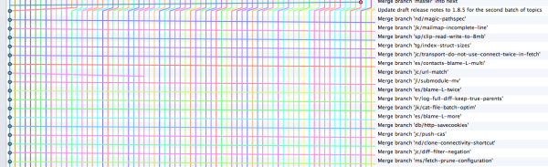
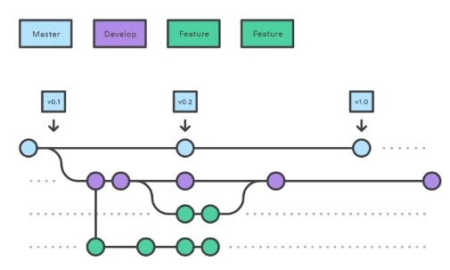
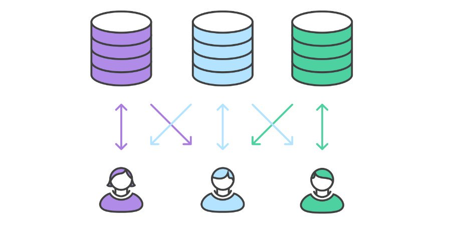

Git
init
git init
Initialized empty Git repository in /private/tmp/git-tutos/.git/
Les arcanes


Les hooks
.git/hooks
├── applypatch-msg.sample
├── commit-msg.sample
├── post-update.sample
├── pre-applypatch.sample
├── pre-commit.sample
├── pre-push.sample
├── pre-rebase.sample
├── pre-receive.sample
├── prepare-commit-msg.sample
└── update.sample
0 directories, 10 files
#! /bin/bash
declare -A PATTERNS;
PATTERNS['^[<>|=]{4,}']="Vous avez des marqueurs de conflits qui traînent";
PATTERNS['TODO|FIXME']="Vous avez des tâches non terminées (FIXME/TODO)";
declare -a errors;
for file in $(git diff --staged --name-only --diff-filter=ACM); do
for elem in ${!PATTERNS[*]} ; do
{ git show :0:"$file" | grep -Eq ${elem}; } || continue;
errors+=("${PATTERNS[${elem}]} in ${file}…");
done
done
author=$(git config --get user.name)
for error in "${errors[@]}"; do
echo -e "\[\033[1;31m\]${error}\[\033[0m\]"
which -s say && say -v Samantha -r 250 "$author $error"
done
if [ ${#errors[@]} -ne 0 ]; then
exit 1
fi
Grumphp
parameters:
bin_dir: "./vendor/bin"
git_dir: "."
hooks_dir: ~
ascii:
failed: grumphp-grumpy.txt
succeeded: grumphp-happy.txt
tasks:
atoum: ~
behat: ~
brunch: ~
clover_coverage: ~
codeception: ~
composer: ~
composer_require_checker: ~
composer_script: ~
deptrac: ~
doctrine_orm: ~
file_size: ~
gherkin: ~
git_blacklist: ~
git_branch_name: ~
git_commit_message: ~
grunt: ~
gulp: ~
infection: ~
jsonlint: ~
kahlan: ~
make: ~
npm_script: ~
phan: ~
phing: ~
php7cc: ~
phpcpd: ~
phpcs: ~
phpcsfixer: ~
phpcsfixer2: ~
phplint: ~
phpmd: ~
phpmnd: ~
phpparser: ~
phpspec: ~
phpstan: ~
phpunit: ~
phpversion: ~
progpilot: ~
psalm: ~
robo: ~
securitychecker: ~
shell: ~
xmllint: ~
yamllint: ~
testsuites: []
extensions: []
config
git config -l
git config --global user.name “Nom”
git config --global user.email “email”
git config --global branch.autosetuprebase always
status
git status
On branch master
Your branch is up to date with 'origin/master'.
Changes not staged for commit:
(use "git add <file>..." to update what will be committed)
(use "git checkout -- <file>..." to discard changes in working directory)
modified: index.html
Untracked files:
(use "git add <file>..." to include in what will be committed)
assets/
lib/css/agate.css
On branch master
Your branch is up to date with 'origin/master'.
Changes to be committed:
(use "git reset HEAD <file>..." to unstage)
modified: index.html
Untracked files:
(use "git add <file>..." to include in what will be committed)
assets/
lib/css/agate.css
add
git add file|folder|*.ext
git add --all
git add -p
@@ -267,6 +403,7 @@
<li>https://github.com/torvalds/subsurface-for-dirk/blob/master/README#L92-L112</li>
<li>https://github.com/torvalds/linux/pull/17#issuecomment-5659933</li>
<li>https://yarchive.net/comp/linux/commit_messages.html</li>
+ <li>https://github.com/phpro/grumphp</li>
</ul>
</section>
</div>
Stage this hunk [y,n,q,a,d,/,K,g,e,?]?
Stage this hunk [y,n,q,a,d,/,K,g,e,?]? ?
y - stage this hunk
n - do not stage this hunk
q - quit; do not stage this hunk or any of the remaining ones
a - stage this hunk and all later hunks in the file
d - do not stage this hunk or any of the later hunks in the file
g - select a hunk to go to
/ - search for a hunk matching the given regex
j - leave this hunk undecided, see next undecided hunk
J - leave this hunk undecided, see next hunk
k - leave this hunk undecided, see previous undecided hunk
K - leave this hunk undecided, see previous hunk
s - split the current hunk into smaller hunks
e - manually edit the current hunk
? - print help
commit
git commit
git commit --fixup
git commit --message “Commit message”
git commit --gpg-sign

Linus Benedict Torvalds
If it's not fairly generic, specify the area (architecture, subsystem, driver) that the fix is for in the subject line. Even if you end up initially sending the fix out to just a list that handles that particular subsystem anyway.
Don't use commit names in the subject line - and while it's great to use them in the body of the explanation, even there you don't want to assume that people read it from within git. People see patches and commit changelogs on the web or the commit mailing lists, so when specifying an exact version, also specify the human-readable name of that version.
Write the commit message for an outsider, and use whitespace. The third-most common fixup I end up doing (after the above two) is to split things up into shorter paragraphs, after somebody wrote a good changelog entry, but made it one large unreadable blob of text. The more involved and technical some description is (and that's what long changelog entries should be - we don't want a fluffy novella here!), the more "breather space" and individually understandable small snippets of text readers need. Making things too dense is bad.
A good commit message looks like
Header line: explain the commit in one line (use the imperative)
Body of commit message is a few lines of text, explaining things in more detail, possibly giving some background about the issue being fixed, etc etc.
The body of the commit message can be several paragraphs, and please do proper word-wrap and keep columns shorter than about 74 characters or so. That way "git log" will show things nicely even when it's indented.
Make sure you explain your solution and why you're doing what you're doing, as opposed to describing what you're doing. Reviewers and your future self can read the patch, but might not understand why a particular solution was implemented.
Reported-by: whoever-reported-it
Signed-off-by: Your Name
log
git log --oneline
a9c4054 (HEAD -> php7, vonglasow/php7) chore(php) Remove empty files
922a0ef chore(doc) Remove phpdoc
8feae89 chore(doc) Remove phpdoc
8c97f88 chore(doc) Remove phpdoc
471048a chore(doc) Remove phpdoc
c582137 fix(tests) Fix tests
e9eef02 chore(php) Update code to PHP 7.1
ba3fa3e chore(php) Move to PHP 7
aca338a (vonglasow/supported-version, origin/master, origin/HEAD, master) chore(composer) add PHP version requirement
7150785 (tag: 1.17.05.16, vonglasow/master) Prepare 1.17.05.16.
311a733 Arithmetic: Add more constants.
92a7644 Merge pull request #1 from Metalaka/constants
91ef70d Add INFINITE constant to Aritmetic
b88b213 (tag: 1.17.01.13) Prepare 1.17.01.13.
git log --author vonglasow
commit 092067735eae38346efa338b6331180347340237
Author: Alexis von Glasow <vonglasow@gmail.com>
Date: Mon Jul 2 14:55:31 2018 +0200
refactor fixup
commit f2d5705a6fcdf830a1b8e7102ed9714d576bc976
Author: Alexis von Glasow <vonglasow@gmail.com>
Date: Tue May 22 12:32:35 2018 +0200
Refactor
git shortlog -sne
118 Ivan Enderlin <ivan.enderlin@hoa-project.net>
11 Alexis von Glasow <ashgenesis@gmail.com>
4 Marc Gratch <me@marcgratch.com>
3 Zack Katz <zack@katzwebservices.com>
1 Juha Remes <jremes@outlook.com>
1 Julien BIANCHI <contact@jubianchi.Fr>
1 Metalaka <matthieu.de.laubrie@gmail.com>
1 Stéphane HULARD <s.hulard@chstudio.fr>
1 Stéphane PY <py.stephane1@gmail.com>
1 Timothée Barray <tim@amicalement-web.net>
1 hywan <devnull@localhost>
1 jubianchi <contact@jubianchi.fr>
1 rparpa <remi.parpaillon@gmail.com>
1 Cédric Dugat <cedric@dugat.me>
1 Edson Medina <edsonmedina@gmail.com>
git log --graph --pretty=format:'%Cred%h%Creset -%C(yellow)%d%Creset %s %Cgreen(%cr) %C(cyan)<%an>%Creset' --abbrev-commit --date=relative --all
* aca338a - (vonglasow/supported-version, origin/master, origin/HEAD, master) chore(composer) add PHP version requirement (1 year, 1 month ago) <Alexis von Glasow>
* 7150785 - (tag: 1.17.05.16, vonglasow/master) Prepare 1.17.05.16. (1 year, 4 months ago) <Ivan Enderlin>
* 311a733 - Arithmetic: Add more constants. (1 year, 7 months ago) <Ivan Enderlin>
|\
| * 92a7644 - Merge pull request #1 from Metalaka/constants (1 year, 7 months ago) <Julien BIANCHI>
| |\
| | * 91ef70d - Add INFINITE constant to Aritmetic (1 year, 8 months ago) <Metalaka>
| |/
| * 880cd9d - Added constants to Arithmetic (2 years, 6 months ago) <Juha Remes>
* | b88b213 - (tag: 1.17.01.13) Prepare 1.17.01.13. (1 year, 8 months ago) <Ivan Enderlin>
* | a06560b - (vonglasow/incoming) Quality: Happy new year! (1 year, 8 months ago) <Alexis von Glasow>
* | 2c1c71e - Documentation: Fix a typo. (1 year, 10 months ago) <Ivan Enderlin>
|\ \
| * | f6f64ce - Typo (1 year, 10 months ago) <Edson Medina>
* | | f8dd3a4 - Documentation: Add PSIH & PMSIpilot as projects. (1 year, 10 months ago) <Ivan Enderlin>
|/ /
* | b76e2ba - Test: Fix namespaces. (1 year, 10 months ago) <Ivan Enderlin>
* | 0524be6 - Test: Add the `Decorrelated` interface. (1 year, 10 months ago) <Ivan Enderlin>
* | 1642721 - Documentation: Add a related project. (1 year, 11 months ago) <Ivan Enderlin>
* | fa78b0c - Documentation: New `README.md` file. (1 year, 11 months ago) <Ivan Enderlin>
diff
git diff commit
git diff commit..commit
git diff --cached
branch
git branch mabranche
git branch my2.6.14 v2.6.14
git branch -m mybranch
git branch -D mybranch
checkout
git checkout commit file
git checkout .
git checkout -b mybranch upstream/mybranch
git checkout mybranch
merge
git merge mybranch
3 way merge

Fast forward

revert
git revert commit
git show aca338a53f3a6100e1049b9f3a8a32cfa0aa26e3
commit aca338a53f3a6100e1049b9f3a8a32cfa0aa26e3 (origin/master, origin/HEAD)
Author: Alexis von Glasow <ashgenesis@gmail.com>
Date: Fri Aug 4 00:16:35 2017 +0200
chore(composer) add PHP version requirement
Define minimal supported version of PHP needed into composer.json
Address hoaproject/Central#70.
diff --git a/composer.json b/composer.json
index ade57f4..0850833 100644
--- a/composer.json
+++ b/composer.json
@@ -24,6 +24,7 @@
"source": "https://central.hoa-project.net/Resource/Library/Math"
},
"require": {
+ "php" : ">=5.5.0",
"hoa/compiler" : "~3.0",
"hoa/consistency": "~1.0",
"hoa/exception" : "~1.0",
git show 98d590101b33e95420a8b1505938e1c61d0271eb
commit 98d590101b33e95420a8b1505938e1c61d0271eb (HEAD -> master)
Author: Alexis von Glasow <vonglasow@gmail.com>
Date: Tue Sep 4 00:16:17 2018 +0200
Revert "chore(composer) add PHP version requirement"
This reverts commit aca338a53f3a6100e1049b9f3a8a32cfa0aa26e3.
diff --git a/composer.json b/composer.json
index 0850833..ade57f4 100644
--- a/composer.json
+++ b/composer.json
@@ -24,7 +24,6 @@
"source": "https://central.hoa-project.net/Resource/Library/Math"
},
"require": {
- "php" : ">=5.5.0",
"hoa/compiler" : "~3.0",
"hoa/consistency": "~1.0",
"hoa/exception" : "~1.0",
reset
git reset --hard
git reset
On branch master
Your branch is up to date with 'origin/master'.
Changes to be committed:
(use "git reset HEAD <file>..." to unstage)
modified: index.html
Untracked files:
(use "git add <file>..." to include in what will be committed)
assets/
lib/css/agate.css
On branch master
Your branch is up to date with 'origin/master'.
Changes not staged for commit:
(use "git add <file>..." to update what will be committed)
(use "git checkout -- <file>..." to discard changes in working directory)
modified: index.html
Untracked files:
(use "git add <file>..." to include in what will be committed)
assets/
lib/css/agate.css
pull
git pull = git fetch + merge
git pull --rebase = git fetch + rebase
git config --global branch.autosetuprebase always
cherry-pick
git cherry-pick -ex <commit>
rebase
git rebase master
# Commands:¬
# p, pick = use commit¬
# r, reword = use commit, but edit the commit message¬
# e, edit = use commit, but stop for amending¬
# s, squash = use commit, but meld into previous commit¬
# f, fixup = like "squash", but discard this commit's log message¬
# x, exec = run command (the rest of the line) using shell¬
# d, drop = remove commit¬

push
git push -u origin mybranch
reflog
git reflog
22af611 (HEAD -> git, origin/git) HEAD@{0}: commit (amend): git
39ab71f (master) HEAD@{1}: checkout: moving from master to git
39ab71f (master) HEAD@{2}: commit: git
249f013 (origin/master, origin/HEAD) HEAD@{3}: clone: from git@github.com:vonglasow/reveal.js.git
git reset --hard <commit>
bisect
git bisect start¬
git bisect bad¬
git bisect good <goodcommit>¬
Bisecting: 675 revisions left to test after this (roughly 10 steps)¬
git bisect run <command>¬

archive
git archive -o file.tar.gz HEAD
clean
git clean -fdn #remove untracked files
Garbage Collector
git gc¬
Counting objects: 854, done.¬
Delta compression using up to 4 threads.¬
Compressing objects: 100% (719/719), done.¬
Writing objects: 100% (854/854), done.¬
Total 854 (delta 480), reused 352 (delta 0)¬
Merge Tool
git mergetool
fsck
git fsck --verbose --progress --strict
Remotes
git remote -v master ⬆ ◼
origin git@github.com:hoaproject/Math.git (fetch)
origin git@github.com:hoaproject/Math.git (push)
vonglasow git@github.com:vonglasow/Math.git (fetch)
vonglasow git@github.com:vonglasow/Math.git (push)
Workflow
- Centralisé
- Feature branch
- Git flow
- Fork
Centralisé

Feature branch
Git flow

Git fork flow
Ressources
- https://www.grafikart.fr/formations/git
- https://fr.atlassian.com/git/tutorials/setting-up-a-repository
- https://fr.atlassian.com/git/tutorials/comparing-workflows
- https://learngitbranching.js.org
- https://git-scm.com/book/en/v2/Git-Internals-Plumbing-and-Porcelain
- https://github.com/torvalds/subsurface-for-dirk/blob/master/README#L92-L112
- https://github.com/torvalds/linux/pull/17#issuecomment-5659933
- https://yarchive.net/comp/linux/commit_messages.html
- https://github.com/phpro/grumphp
- https://github.com/vonglasow/gitconfig